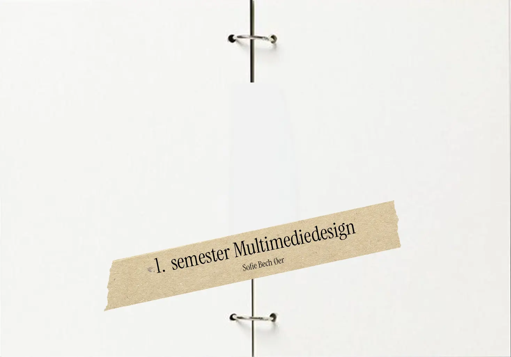
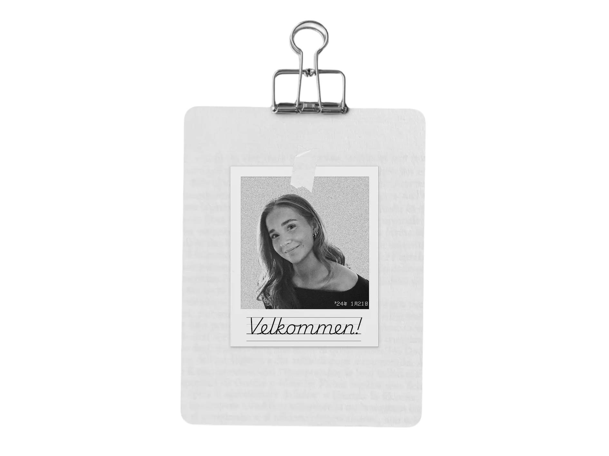
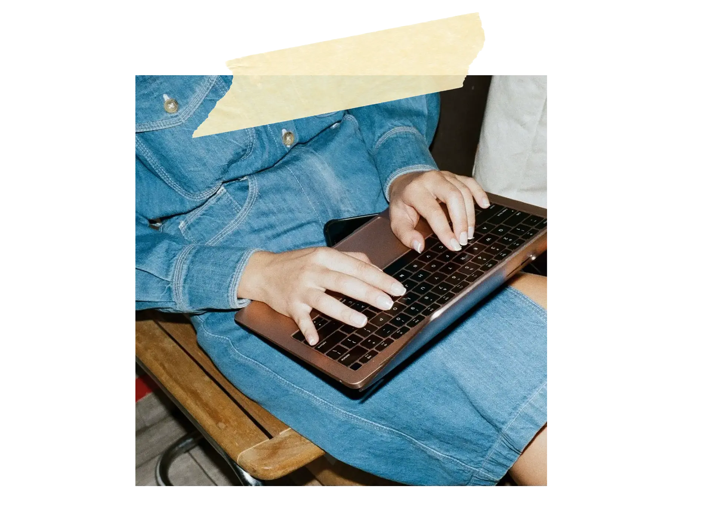
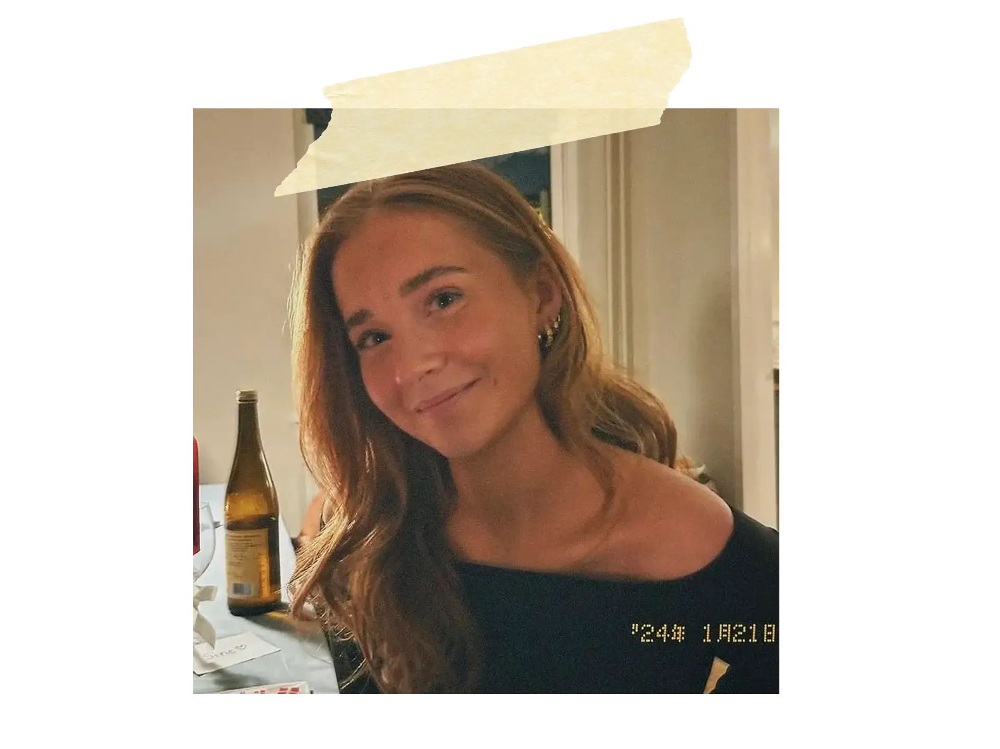

Velkommen til min
portfolio
Introduktion
Velkommen til min portfolio!
Her finder du en samling af mit arbejde fra 1. semester på Multimediedesign. Du kan både dykke ned i mine projekter, mine arbejdsprocesser og læse om mine refleksioner bag hvert projekt. Formålet er at give et indblik i hvilke projekter
man laver på 1. semester og hvilke metoder og værktøjer man bliver introduceret for.
Derudover kan du også få et lille indblik i hvem jeg er - god fornøjelse!

Læs mere:
01 Projekter

02 Om mig
